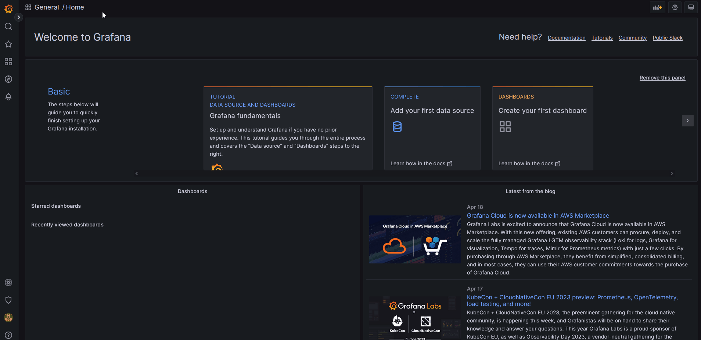
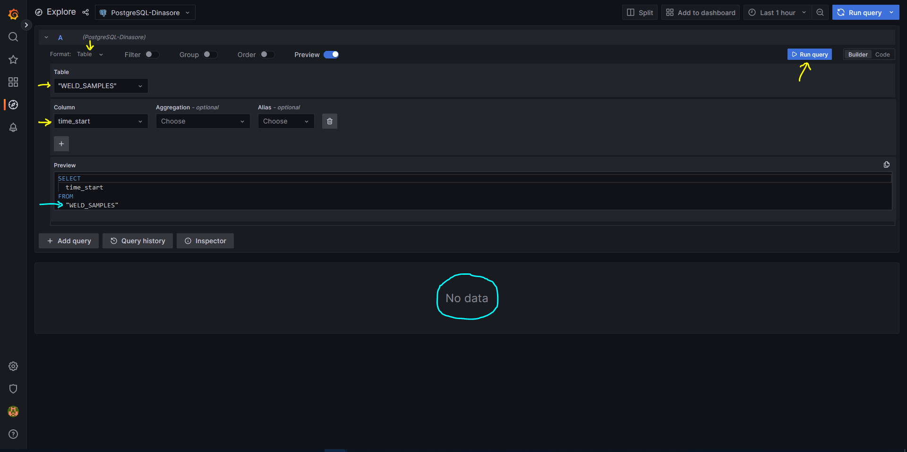
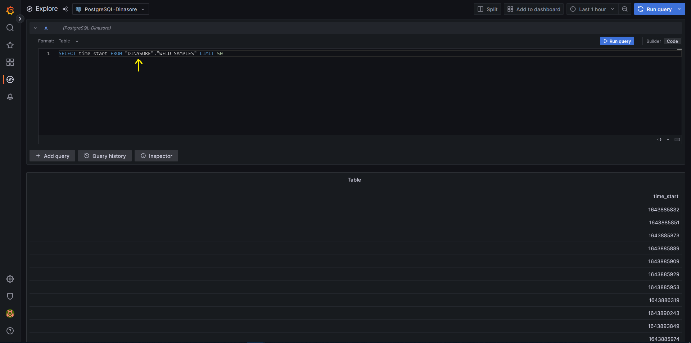
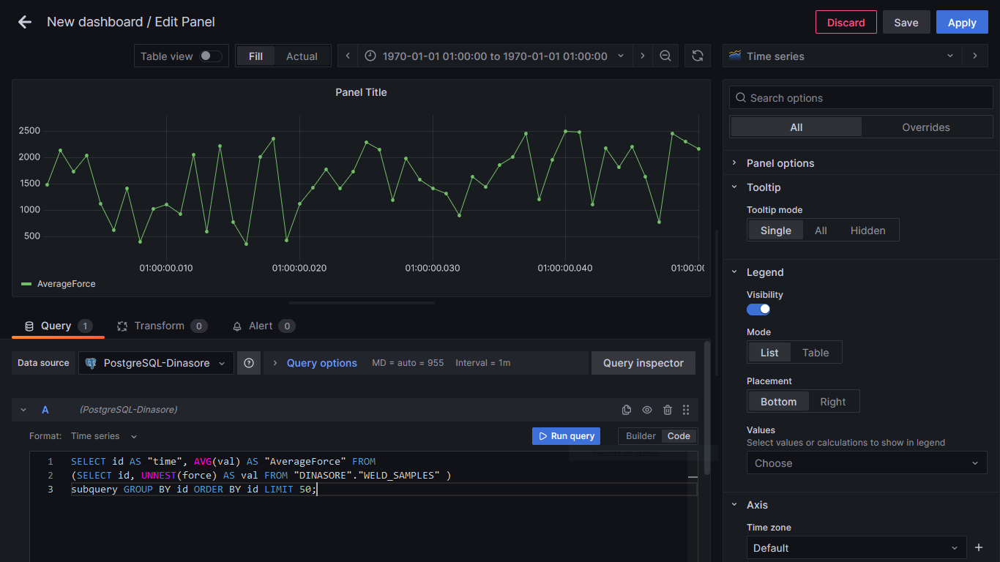
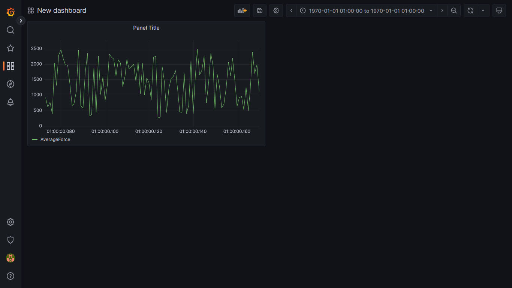
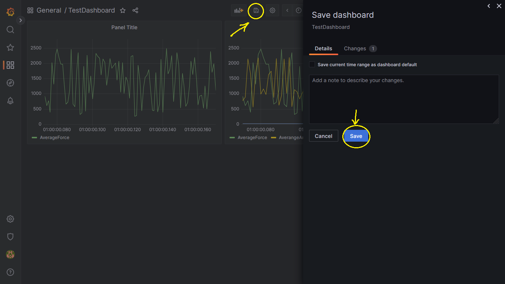

PostgreSQL to Grafana
Database
The database to be used will be the PostgreSQL. The main connection parameters:
database name
username
password
host (‘db.fe.up.pt’)
port (5432)
The data that we want to store in this database has the JSON file format with the following structure:
1{
2 "timeStart": 123.456,
3 "timeEnd": 123.456,
4 "environmentT": 123.456,
5 "motorBearingT": 123.456,
6 "spindleBearingT": 123.456,
7 "counter": 1,
8 "sdIntensity": 123.456,
9 "times": [t0,t1,t2,...,tk],
10 "angularVelocity": [a0,a1,a2,...,ak],
11 "force": [fx0,f1,f2,..., fk],
12 "displacement": [d0,d1,d2,...,dk]
13}
Considering each field corresponding to one column in the database table, the SQL statement (in python string format) below easly creates the table (WELD_SAMPLES) with the required columns and data types:
1CREATE TABLE IF NOT EXISTS "WELD_SAMPLES" ("id" serial, "time_start" float, "time_end" float, "environment_t" float, "motor_bearing_t" float, "spindle_bearing_t" float, "counter" int, "sdintensity" float, "times" float ARRAY, "angular_velocity" float ARRAY, "force" float ARRAY, "displacement" float ARRAY);
1'CREATE TABLE IF NOT EXISTS "WELD_SAMPLES" (\
2 "id" serial, \
3 "time_start" float, \
4 "time_end" float, \
5 "environment_t" float, \
6 "motor_bearing_t" float, \
7 "spindle_bearing_t" float, \
8 "counter" int, \
9 "sdintensity" float, \
10 "times" float ARRAY, \
11 "angular_velocity" float ARRAY, \
12 "force" float ARRAY,\
13 "displacement" float ARRAY\
14)'
Therefore, to insert the JSON welding sample, the SQL statement (in python string format) would be:
1INSERT INTO "WELD_SAMPLES" (time_start, time_end, environment_t, motor_bearing_t, spindle_bearing_t, counter, sdintensity, times, angular_velocity, force, displacement) VALUES (%s,%s,%s,%s,%s,%s,%s,%s,%s,%s,%s);
1'INSERT INTO "WELD_SAMPLES" (\
2 time_start, \
3 time_end, \
4 environment_t, \
5 motor_bearing_t, \
6 spindle_bearing_t, \
7 counter, \
8 sdintensity, \
9 times, \
10 angular_velocity, \
11 force, \
12 displacement\
13) VALUES (%s,%s,%s,%s,%s,%s,%s,%s,%s,%s,%s)'
The following Code Example has functions to
delete the DB Schema
create the DataBase with the required table
create and return the connection handler
insert data (list)
Show Code
1# -*- coding: utf-8 -*-
2"""
3Created on Tue Apr 18 00:18:18 2023
4
5@author: Conrado
6"""
7
8#%%
9import traceback
10import psycopg2
11import time
12#https://db.fe.up.pt/phppgadmin/
13
14
15def deleteSchema(myUsername=None, myPassword=None):
16 conn = psycopg2.connect(database=myUsername,
17 user=myUsername,
18 password=myPassword,
19 host='db.fe.up.pt',
20 port= '5432')
21 cursor = conn.cursor()
22 cursor.execute('DROP SCHEMA IF EXISTS "DINASORE" CASCADE')
23 conn.commit()
24 conn.close()
25 return
26
27
28def initDB(myUsername=None, myPassword=None):
29 # Establishing the connection
30 conn = psycopg2.connect(database=myUsername,
31 user=myUsername,
32 password=myPassword,
33 host='db.fe.up.pt',
34 port= '5432')
35
36 # Creating a cursor object using the cursor() method
37 cursor = conn.cursor()
38
39 # Executing an SQL function using the execute() method
40 cursor.execute("select version()")
41
42 # Fetch a single row using fetchone() method.
43 data = cursor.fetchone()
44 print("Connection established to: ",data)
45
46 #Create DINASORE Schema
47 cursor.execute('CREATE SCHEMA IF NOT EXISTS "DINASORE"')
48
49 #Setting the path to DINASORE
50 cursor.execute('SET search_path TO "DINASORE"')
51
52
53 #Creating Arrays in PostgreSQL: https://www.postgresql.org/docs/current/arrays.html
54 #Other strategies:
55 #https://www.postgresql.org/docs/current/datatype-json.html
56 #https://www.blendo.co/blog/storing-json-in-postgresql/
57
58
59
60 #OBS: Camel Case may cause errors
61 #example:
62 #psycopg2.errors.UndefinedColumn: column "timestart" of relation "WELD_SAMPLES" does not exist
63 #LINE 1: INSERT INTO "WELD_SAMPLES" ( timeStart, ...
64
65
66
67 #Sample example:
68 # {
69 # "timeStart": 1643885832.053,
70 # "timeEnd": 1643885839.0434105,
71 # "environmentT": 316.10670037633975,
72 # "motorBearingT": 316.7429856634482,
73 # "spindleBearingT": 340.6813214621365,
74 # "counter": 1,
75 # "sdIntensity": 1.4685540517262314,
76 # "times": [t0,t1,t2,...],
77 # "angularVelocity": [a0,a1,a2...],
78 # "force": [fx0, f1, f2, ...],
79 # "displacement": [d0,d1,d2,...]
80 # }
81
82 cursor.execute(
83 'CREATE TABLE IF NOT EXISTS "WELD_SAMPLES" (\
84 "id" serial, \
85 "time_start" float, \
86 "time_end" float, \
87 "environment_t" float, \
88 "motor_bearing_t" float, \
89 "spindle_bearing_t" float, \
90 "counter" int, \
91 "sdintensity" float, \
92 "times" float ARRAY, \
93 "angular_velocity" float ARRAY, \
94 "force" float ARRAY, \
95 "displacement" float ARRAY\
96 )'
97 )
98
99
100 conn.commit()
101
102 #Closing the connection
103 conn.close()
104
105 return
106
107
108
109
110def getConnectionDB(myUsername=None, myPassword=None):
111 conn = psycopg2.connect(database=myUsername,
112 user=myUsername,
113 password=myPassword,
114 host='db.fe.up.pt',
115 port= '5432')
116 return conn
117
118
119def insertDataV3(myUsername=None, myPassword=None, connection=None, statement = None, data = None):
120 #Inputs:
121 # connection (such as connection = getConnectionDB())
122 # statement [STR]: statement sql
123 # data [LIST]: list with values to be saved
124 try:
125 delay = 0.050
126 #-------------------------------------------------------
127 for k in range(20):
128 #Sometimes, postgres will give psycopg2.OperationalError
129 #To avoid losing data and return without saving anything,
130 #we try to save the data 20 times.
131 #Whenever the error occurs, we wait some time and
132 #try to close the current connection in order to re-connect.
133 try:
134 print("Trying...(%d)" % k)
135 cursor = connection.cursor()
136 cursor.execute('SET search_path TO "DINASORE"')
137 cursor.execute(statement, data)
138
139 connection.commit()
140 print("Success.\n")
141 return k
142 except:
143 #print(traceback.format_exc())
144
145 time.sleep(delay)
146 try:
147 connection.close()
148 connection = getConnectionDB(myUsername=myUsername,
149 myPassword=password)
150 except:
151 connection = getConnectionDB(myUsername=myUsername,
152 myPassword=myPassword)
153
154 return -1
155 except:
156 print(traceback.format_exc())
157
158 return -1
Reading JSON Files
If we have one subfolder with JSON sample files (e.g., mysamples\weld_sample01.json), it is desirable to read their content.
The main steps to read the JSON sample files:
Convert the subfolder (e.g., mysamples) files into a Python List, which will be useful to iterate over them.
List example: mySampleFiles = [‘weld_sample01.json’, ‘weld_sample02.json’, ‘weld_sample03.json’, …, ‘weld_samplexy.json’]
Code example:
1import os
2import re #required for the sorting
3
4def getJSONfilesList(subfolderName = "samples"):
5
6 filesFolder = os.path.join(os.getcwd(), subfolderName)
7 filesList = sorted(os.listdir(filesFolder))
8
9 sortAlphanum = lambda s: [int(t) if t.isdigit() else t.lower() for t in re.split('(\d+)', s)]
10
11 #Natural Sort:
12 #['weld_0.json', 'weld_1.json', 'weld_10.json', 'weld_100.json', ..., 'weld_2.json', ...]
13 #to
14 ##['weld_0.json', 'weld_1.json', 'weld_2.json', 'weld_3.json', ..., 'weld_10.json', ..., 'weld_100.json']
15
16 filesList = sorted(filesList, key=sortAlphanum)
17
18 return filesList
19
20
21filesList = getJSONfilesList()
Join the Current Working Directory, with the subfolder and with the JSON filename
Example:
filePath = C:\Users\Admin\Dinasore\mysamples\weld_sample01.json
filePath = C:\Users\Admin\Dinasore\mysamples\weld_sample02.json…
filePath = C:\Users\Admin\Dinasore\mysamples\weld_samplexy.json
Code Example:
1subfolder = "samples"
2filename = "weld_sample01.json"
3filePath = os.path.join(os.getcwd(), "samples", filename)
Other methods also work.
Considering a List of JSON Files inside the “samples” subfolder:
Iterate over the JSON files
Create FilePath for the current file in the current iteration
Open the file
Load the JSON data (returns dictionary data type)
Extract the desired dictionary fields and append them to a dataList
The conversion from dictionary to list is useful since it complies with the SQL Statement considered previously.
Code Example:
1import json
2
3#Get the Files in List Format:
4filesList = getJSONfilesList()
5
6#Iterate over the sample files:
7for file in filesList:
8 #Create FilePath
9 filePath = os.path.join(os.getcwd(), "samples", file)
10
11 with open(filePath, 'r') as jsonFile:
12 #Load the File contents
13 fileData = json.load(jsonFile)
14 dataList = [
15 fileData["timeStart"],
16 fileData["timeEnd"],
17 fileData["environmentT"],
18 fileData["motorBearingT"],
19 fileData["spindleBearingT"],
20 fileData["counter"],
21 fileData["sdIntensity"],
22 fileData["times"],
23 fileData["angularVelocity"],
24 fileData["force"]
25 ]
With the fileData (dictionary Data Type) having the structure:
1fileData = {
2 'timeStart': 123.456,
3 'timeEnd': 123.456,
4 'environmentT': 123.456,
5 'motorBearingT': 123.456,
6 'spindleBearingT': 123.456,
7 'counter': 112,
8 'sdIntensity': 123.456,
9 'times': [t0, t1, t2, ...],
10 'angularVelocity': [a0, a1, a2, ...],
11 'force': [f0, f1, f2, ...],
12 'displacement': [d0, f1, f2, ...]
13}
Warning
Do not forget to import the json library.
JSON to Database
With the above ideas, the full example codes are:
Convert the subfolder (e.g., mysamples) files into a Python List, which will be useful to iterate over them.
List example: mySampleFiles = [‘weld_sample01.json’, ‘weld_sample02.json’, ‘weld_sample03.json’, …, ‘weld_samplexy.json’]
Code example:
Show Code
1# -*- coding: utf-8 -*-
2"""
3Created on Tue Apr 18 00:40:46 2023
4
5@author: Conrado
6"""
7
8#%%
9import os
10import re
11import json
12import traceback
13import dbFunctions
14
15
16def getJSONfilesList(subfolderName = "mysamples"):
17
18 filesFolder = os.path.join(os.getcwd(), subfolderName)
19 filesList = sorted(os.listdir(filesFolder))
20
21 sortAlphanum = lambda s: [int(t) if t.isdigit() else t.lower() for t in re.split('(\d+)', s)]
22
23 #Natural Sort:
24 #['weld_0.json', 'weld_1.json', 'weld_10.json', 'weld_100.json', ..., 'weld_2.json', ...]
25 #to
26 ##['weld_0.json', 'weld_1.json', 'weld_2.json', 'weld_3.json', ..., 'weld_10.json', ..., 'weld_100.json']
27
28 filesList = sorted(filesList, key=sortAlphanum)
29
30 return filesList
31
32
33
34
35dbUsername = "abcde"
36dbPassword = "abcde1234"
37
38
39try:
40 dbFunctions.deleteSchema(myUsername = dbUsername,
41 myPassword = dbPassword)
42 dbFunctions.initDB(myUsername = dbUsername,
43 myPassword = dbPassword)
44
45
46
47 insertStatement = (
48 'INSERT INTO "WELD_SAMPLES" (\
49 time_start, \
50 time_end, \
51 environment_t, \
52 motor_bearing_t, \
53 spindle_bearing_t, \
54 counter, \
55 sdintensity, \
56 times, \
57 angular_velocity, \
58 force, \
59 displacement\
60 ) VALUES (%s,%s,%s,%s,%s,%s,%s,%s,%s,%s,%s)'
61 )
62
63
64
65 filesList = getJSONfilesList()
66
67 filesNotSaved = []
68 filesWithReadingError = []
69
70 DBconn = dbFunctions.getConnectionDB(myUsername = dbUsername,
71 myPassword = dbPassword)
72 #DBcursor = DBconn.cursor()
73 #DBcursor.execute('SET search_path TO "DINASORE"')
74 iters = 0
75
76 #Iterate over the sample files:
77 for file in filesList:
78 try:
79 filePath = os.path.join(os.getcwd(), "mysamples", file)
80 rc = -2
81 with open(filePath, 'r') as jsonFile:
82 fileData = json.load(jsonFile)
83 dataList = [
84 fileData["timeStart"],
85 fileData["timeEnd"],
86 fileData["environmentT"],
87 fileData["motorBearingT"],
88 fileData["spindleBearingT"],
89 fileData["counter"],
90 fileData["sdIntensity"],
91 fileData["times"],
92 fileData["angularVelocity"],
93 fileData["force"],
94 fileData["displacement"],
95 ]
96
97 rc = dbFunctions.insertDataV3(myUsername = dbUsername,
98 myPassword = dbPassword,
99 connection = DBconn,
100 statement = insertStatement,
101 data = dataList)
102
103 if (rc >= 0):
104 print("%s saved to BD." % file)
105 if (rc > 0):
106 DBconn = dbFunctions.getConnectionDB(myUsername = dbUsername,
107 myPassword = dbPassword)
108 else:
109 print("%s not saved to BD." % file)
110 filesNotSaved.append(file)
111 DBconn = dbFunctions.getConnectionDB(myUsername = dbUsername,
112 myPassword = dbPassword)
113
114 except:
115 print(traceback.format_exc())
116 if (rc == -2):
117 print("ERROR reading")
118 filesWithReadingError.append(file)
119 pass
120
121 iters += 1
122 # if (iters % 10 == 0):
123 # break
124
125except:
126 print(traceback.format_exc())
127
1# -*- coding: utf-8 -*-
2"""
3Created on Tue Apr 18 00:18:18 2023
4
5@author: Conrado
6"""
7
8#%%
9import traceback
10import psycopg2
11import time
12#https://db.fe.up.pt/phppgadmin/
13
14
15def deleteSchema(myUsername=None, myPassword=None):
16 conn = psycopg2.connect(database=myUsername,
17 user=myUsername,
18 password=myPassword,
19 host='db.fe.up.pt',
20 port= '5432')
21 cursor = conn.cursor()
22 cursor.execute('DROP SCHEMA IF EXISTS "DINASORE" CASCADE')
23 conn.commit()
24 conn.close()
25 return
26
27
28def initDB(myUsername=None, myPassword=None):
29 # Establishing the connection
30 conn = psycopg2.connect(database=myUsername,
31 user=myUsername,
32 password=myPassword,
33 host='db.fe.up.pt',
34 port= '5432')
35
36 # Creating a cursor object using the cursor() method
37 cursor = conn.cursor()
38
39 # Executing an SQL function using the execute() method
40 cursor.execute("select version()")
41
42 # Fetch a single row using fetchone() method.
43 data = cursor.fetchone()
44 print("Connection established to: ",data)
45
46 #Create DINASORE Schema
47 cursor.execute('CREATE SCHEMA IF NOT EXISTS "DINASORE"')
48
49 #Setting the path to DINASORE
50 cursor.execute('SET search_path TO "DINASORE"')
51
52
53 #Creating Arrays in PostgreSQL: https://www.postgresql.org/docs/current/arrays.html
54 #Other strategies:
55 #https://www.postgresql.org/docs/current/datatype-json.html
56 #https://www.blendo.co/blog/storing-json-in-postgresql/
57
58
59
60 #OBS: Camel Case may cause errors
61 #example:
62 #psycopg2.errors.UndefinedColumn: column "timestart" of relation "WELD_SAMPLES" does not exist
63 #LINE 1: INSERT INTO "WELD_SAMPLES" ( timeStart, ...
64
65
66
67 #Sample example:
68 # {
69 # "timeStart": 1643885832.053,
70 # "timeEnd": 1643885839.0434105,
71 # "environmentT": 316.10670037633975,
72 # "motorBearingT": 316.7429856634482,
73 # "spindleBearingT": 340.6813214621365,
74 # "counter": 1,
75 # "sdIntensity": 1.4685540517262314,
76 # "times": [t0,t1,t2,...],
77 # "angularVelocity": [a0,a1,a2...],
78 # "force": [fx0, f1, f2, ...],
79 # "displacement": [d0,d1,d2,...]
80 # }
81
82 cursor.execute(
83 'CREATE TABLE IF NOT EXISTS "WELD_SAMPLES" (\
84 "id" serial, \
85 "time_start" float, \
86 "time_end" float, \
87 "environment_t" float, \
88 "motor_bearing_t" float, \
89 "spindle_bearing_t" float, \
90 "counter" int, \
91 "sdintensity" float, \
92 "times" float ARRAY, \
93 "angular_velocity" float ARRAY, \
94 "force" float ARRAY, \
95 "displacement" float ARRAY\
96 )'
97 )
98
99
100 conn.commit()
101
102 #Closing the connection
103 conn.close()
104
105 return
106
107
108
109
110def getConnectionDB(myUsername=None, myPassword=None):
111 conn = psycopg2.connect(database=myUsername,
112 user=myUsername,
113 password=myPassword,
114 host='db.fe.up.pt',
115 port= '5432')
116 return conn
117
118
119def insertDataV3(myUsername=None, myPassword=None, connection=None, statement = None, data = None):
120 #Inputs:
121 # connection (such as connection = getConnectionDB())
122 # statement [STR]: statement sql
123 # data [LIST]: list with values to be saved
124 try:
125 delay = 0.050
126 #-------------------------------------------------------
127 for k in range(20):
128 #Sometimes, postgres will give psycopg2.OperationalError
129 #To avoid losing data and return without saving anything,
130 #we try to save the data 20 times.
131 #Whenever the error occurs, we wait some time and
132 #try to close the current connection in order to re-connect.
133 try:
134 print("Trying...(%d)" % k)
135 cursor = connection.cursor()
136 cursor.execute('SET search_path TO "DINASORE"')
137 cursor.execute(statement, data)
138
139 connection.commit()
140 print("Success.\n")
141 return k
142 except:
143 #print(traceback.format_exc())
144
145 time.sleep(delay)
146 try:
147 connection.close()
148 connection = getConnectionDB(myUsername=myUsername,
149 myPassword=password)
150 except:
151 connection = getConnectionDB(myUsername=myUsername,
152 myPassword=myPassword)
153
154 return -1
155 except:
156 print(traceback.format_exc())
157
158 return -1
Grafana
To deploy Dashboards with our Data we will be using Grafana local instance instead of the cloud version, mostly due do network constraints.
The requirements/parameters are:
Connection to FEUP VPN
Address: 10.227.211.12
Port: 3000
Full Address:
10.227.211.12:3000//loginUsername: admin
Password: digi2-gpu
Adding PostgreSQL DataSource
Creating Dashboards require data, therefore one must previously add the data source. To accomplish that:
INFO
This is the main grafana front page.
INFO
The Left tab allow us to access our Data Sources list, under the Configuration menu.
INFO
This page allow us to manage the added data sources and add new ones.
INFO
This search page allow us to choose the supported Data Sources by Grafana. For the current application, we will be using the PostgreSQL.
INFO
The main settings to add/change:
Data Source Name
- PostgreSQL Connection
host:
db.fe.up.ptdatabase name
username
password
TLS/SSL Mode disabled
Then, after clicking the Save & Test button, the data source is ready to be used (if the message “Database Connection OK” appears).
INFO
If the Data Source was successfully added it should be visible in the Data Sources List (under the configuration menu on the left tab)
The full steps are portrayed below:
Exploring the Data Source
Before creating one dashboard, it could be useful to check if Grafana is being able to extract the data from our DataBase.
INFO
We explore the Data Source by clicking the Explore button.
INFO
To execute some query, follow the steps:
Select the desired output format (table, time series, etc);
Build the query with the Query Editor
Example: query the database and display the column “time_start” values
Error
No data is retrieved. This usually happens due to the fact that Grafana usually sets automatically the highest search path. The workaround for this is to Edit the Query and add the schema.
Example: the table “WELD_SAMPLES” would be replaced by “DINASORE”.”WELD_SAMPLES” being “DINASORE” our schema.
By accessing the code tab we can edit the Queries:
And, after adding the schema it results:
Creating Dashboard
INFO
The button “Build a Dashboard” quickly selects the desired data source to be used on the dashboard we want to create.
INFO
Dashboards may have a variety of elements. To start adding the first element, we can choose “Add a new Panel”.
INFO
This page allow us to configure our dashboard element. As for the data to be visualized, we build queries with the Query Editor which will provide the data.
INFO
For this example, the objective is to plot each row average force.
Consider that we have the following table structure:
id |
force |
|---|---|
1 |
{1,2,3} |
2 |
{3,3,6} |
3 |
{4,6,5} |
… |
… |
Then, for each row the average would be:
id |
avg_force |
|---|---|
1 |
2 |
2 |
4 |
3 |
5 |
… |
… |
Thefore, we would like to plot x = {1, 2, 3, …} and y = {2, 4, 5, …}.
With the following SQL it is possible to accomplish that:
1SELECT id AS "time", AVG(val) AS "AverageForce" FROM
2(SELECT id, UNNEST(force) AS val FROM "DINASORE"."WELD_SAMPLES" )
3subquery GROUP BY id ORDER BY id LIMIT 50;
Since this code has more complexity, it is preferred to write it on the code Editor instead of using the Query Editor/Builder.
Limiting to just 50 welding samples:
With 5000 welding samples (change to LIMIT 5000):
INFO
After adding our queries and configuring our Dashboard we apply the changes to save it.
Checking our panel:
Saving the Dashboard:
INFO
It is also possible to have multiple queries on the same dashboard element.
The queries used above are:
1SELECT id AS "time", AVG(val) AS "AverageForce" FROM
2(SELECT id, UNNEST(force) AS val FROM "DINASORE"."WELD_SAMPLES" )
3subquery GROUP BY id ORDER BY id LIMIT 5000;
4
5
6SELECT id AS "time", AVG(val) AS "AverangeAngularVelocity" FROM
7(SELECT id, UNNEST(angular_velocity) AS val FROM "DINASORE"."WELD_SAMPLES" )
8subquery GROUP BY id ORDER BY id LIMIT 5000;
9
10
11SELECT id AS "time", AVG(val) AS "AverangeDisplacement" FROM
12(SELECT id, UNNEST(displacement) AS val FROM "DINASORE"."WELD_SAMPLES" )
13subquery GROUP BY id ORDER BY id LIMIT 5000;